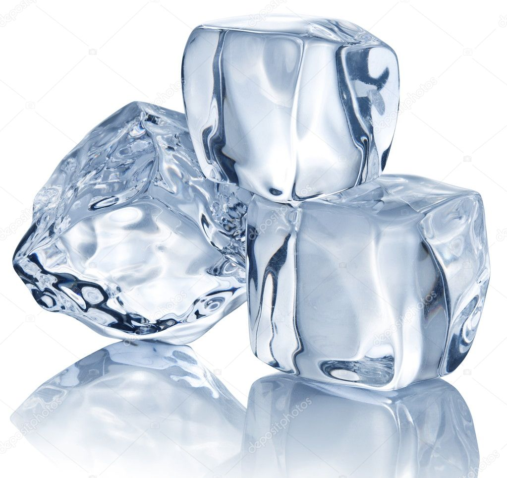

Ice

A classic
Just some water and cold
Ingredients
- 2 cups water
- 2 tablespoons water
steps
- Empty the ice cubes that are left in the trays (if there are any left) into the bin.
- Take the trays over to the sink and fill them with cold water. (Hot water will freeze faster and more clear).
- Place the water filled ice trays back in the freezer.
- Replace the ice bin if you had to remove it.
- Shut the door to the freezer.
- Be sure to leave for around 4-6 hours at least to make sure it is frozen.
- If you want to experiment, you can freeze things like fruit infused waters or juices.
Return Home